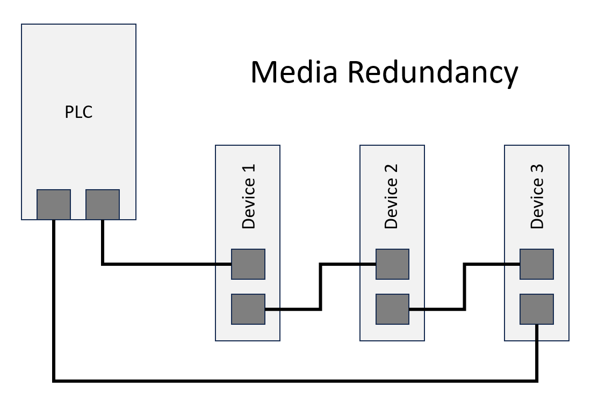
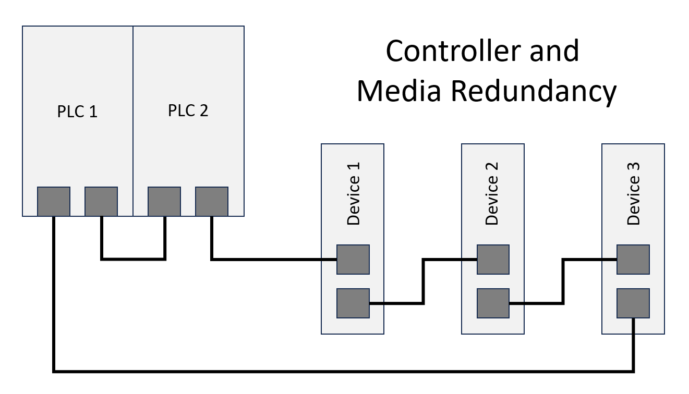

IO752 - Setup v3
IO752 - Setup v3 — Configure the IO752 IO module
Description
The Setup block configures the protocol stack of the related I/O module and enables the Send and Receive blocks to exchange data on the network.
Your model can contain only one Setup block for each I/O module in your target machine.
Parameters
- Module ID
The Module ID has two functions:
It logically connects the Setup block and its I/O blocks
It also informs the auto-search feature of the PCI Slot parameter. If only one I/O module of this family is installed, the Module ID must be set to 1. To see how each I/O module maps to a Module ID, use this Speedgoat API:
speedgoat.getIoInterfaces("TargetName", "mySpeedgoat")
This Setup block belongs to two families of I/O modules that use the same hardware for multiple protocols. Across both families, the Module ID must be unique.
IO64X/IO75X (single-node modules): IO641, IO642, IO643, IO644, IO750, IO751, IO752, IO753, IO754, IO755, IO756, IO758
IO64X-32/IO75X-32 (multi-node modules): IO642-32, IO752-32, IO754-32, IO756-32
If the PCI Slot parameter is set to -1 (auto-search), the Module ID must be in the range 1:n, where 'n' cannot be larger than the number of modules of this type installed in the target machine. Not all installed I/O modules need to be used.
To use this Setup block with a multi-node I/O module (IO75X-32 family), the Module ID must be defined as a two-element vector. The second vector element is the sub-module ID. It describes the specific node (1:32) within the I/O module. The 32 nodes are internally connected to form two linear networks (daisy-chain), where the first and the last node of both chains are externally accessible. If one node is not configured (has no Setup block), the chain terminates at this point. The sub-module IDs must therefore start at node 1, 16, 17 or 32 and not have any gaps.
![[Note]](images/note.png)
Note When using I/O modules of both families simultaneously (single-node and multi-node I/O modules), always use explicit addressing in the PCI Slot parameter. Ignore the Module IDs returned by the getIoInterfaces function and instead assign unique Module IDs accross all modules used.
- PCI Slot (-1: auto-search)
There are two approaches for mapping the block to a specific I/O module installed in your target machine. All modules of the same family (see Module ID above) must be configured using the same method.
- Auto-Search: with the default value -1 the I/O module will be
automatically located in the target machine. If you have
multiple modules of the same family, the Module ID (first
vector element for a multi-node module) defines which module
is associated with this block. To see how each I/O module
maps to a Module ID, use this Speedgoat API:
speedgoat.getIoInterfaces("TargetName", "mySpeedgoat") - Explicit Addressing: to explicitly define the logical
address of the I/O module in the target machine, you can
provide the PCI bus and slot numbers as a vector: [bus,
slot]. To determine these numbers, run the following command
in the MATLAB command window:
speedgoat.getIoInterfaces("TargetName", "mySpeedgoat", "Advanced", true)Note that the PCI address can change whenever an I/O module is added or removed. Usually, auto-search is the best option.
- Auto-Search: with the default value -1 the I/O module will be
automatically located in the target machine. If you have
multiple modules of the same family, the Module ID (first
vector element for a multi-node module) defines which module
is associated with this block. To see how each I/O module
maps to a Module ID, use this Speedgoat API:
- Name of Station
PROFINET uses a name-based station addressing method. The name must be unique in the network and must match the name of the related device node in the PROFINET controller configuration.
The following rules apply to the station name:
The station name must be a character array with a total length between 1 and 240 characters
The station name consists of one or more labels separated by a dot (.)
Each label must have a length between 1 and 63 characters
Labels may only contain lowercase letters (a–z), digits (0–9), and hyphens (-)
Labels must not start with a hyphen (-)
Labels must not end with a hyphen (-)
Labels must not contain consecutive hyphens (--)
Empty labels are not allowed (e.g., leading dots, trailing dots, or consecutive dots)
- Bus Start
This parameter specifies the time the I/O module should start the communication on the network.
On model initialization: The I/O module starts the communication immediately after the initialization of the real-time application on the target. The communication is maintained even if the real-time application stops
On model start: After the initialization of the real-time application on the target (model download), the communication of the I/O module with the network is off. The device starts the communication when the real-time application starts. The device stops the communication when the real-time application stops
- System Redundancy Support
This parameter activates PROFINET S2 System Redundancy support, allowing the IO752 to connect to two redundant PLCs. In an S2 scenario, the backup PLC takes over when the primary PLC fails (controller redundancy).
The IO752 has one network access point (NAP) with two connectors, allowing for the combination of controller and media redundancy. With media redundancy, a ring topology turns into a line topology when the connection breaks at one point. Support for media redundancy is always active regardless of this checkbox selection.
S2 System Redundancy requires a compatible IO752 hardware version with redundancy-enabled firmware. If you select the checkbox for standard hardware, the system log will show the 0xC0000123 error code, and the real-time application will not start. Please ensure you have the necessary hardware and firmware before enabling this option.
Network redundancy requires the PROFINET devices to support R1 and R2 System Redundancy. In general, the IO752 does not support R1 and R2 as these modes require the device to feature two NAPs.


The IO752-32 does not support S2 System Redundancy. The checkbox, therefore, serves no purpose when using this module.
- Record Access Always Succeeds
This parameter refers to the acyclic communication (RECORD access) and defines how the I/O module reacts when record read and write messages are received from remote PROFINET master devices.
If selected, the device always sends back confirmation messages indicating read/write success even though the addressed record is not defined. For read requests, the device sends an array of the requested length where each element is 0.
If cleared, the device sends back confirmations that indicate failure. Furthermore, a warning is added to the target system log for each failed record access.
You define local records using the Record block.
- GSDML
Read the usage notes to learn about GSDML files.
- File Name
Enter the path to the GSDML file of the PROFINET device that you want to simulate. Enter an absolute path to the file or use a function to obtain a relative path. When done, click the Import button to import the data from the GSDML file.
Examples:
'C:\projects\profinet\GSDML-V2.34-Siemens-ET200SP-20190827.xml'
[pwd, '\..\GSDML-V2.31-ABB-FENA-20150120.xml']
Find the default GSDML file here:
[speedgoatroot, '\sg_blocks\cifx\eds\GSDML-V2.33-HILSCHER-CIFX RE PNS-20170919.xml']
This GSDML file contains multiple Device Access Points. Always select CIFX RE/PNS V3.5.35 - V3.x.
Type:
char- Select
Opens a file dialog that lets you select a GSDML file in the file system of your host computer. Afterwards, this button writes the absolute path of the selected file to the FileName parameter and implicitly calls the Import button.
- Import
Imports the device identity values from the specified GSDML file and prepares the available data modules needed for the Data Module Configuration.
The PROFINET device I/O module hosts PROFINET identity attributes, which the remote PROFINET controller can read and write. The mandatory attributes must match the controllers configuration for a successful connection. The corresponding block mask parameters are updated when a GSDML file is selected or imported. The optional attributes are part of the device's I&M records which the remote controller can read and write for optional identification and maintenance purposes. The corresponding block mask parameters are updated when a data access point (DAP) is selected in the Modules tab.
- Vendor ID
The ID is copied from the VendorID attribute in the ProfileBody/DeviceIdentity section of the related GSDML file. The ID is an integer number in the range of 0x0001 to 0xFEFF and must match the Vendor ID of the related device node in the PROFINET controller configuration.
Note The Vendor ID must be a decimal number. You can use hex2dec() to convert a hexadecimal number to a decimal number.
- Device ID
The ID is copied from the DeviceID attribute in the ProfileBody/DeviceIdentity section of the related GSDML file. The ID is an integer number in the range of 0x0001 to 0xFFFF and must match the Device ID of the related device node in the PROFINET controller configuration.
Note The Device ID must be a decimal number. You can use hex2dec() to convert a hexadecimal number to a decimal number.
- Write optional attributes
If selected, the optional attributes below are written to the module's I&M records. Otherwise, the records keep their default values (generic values without relation to the GSDML file selected).
Note Writing the I&M data takes up a little more time during the module initialization on the target machine and is not required for connection with the controller.
- Device Type
The Device Type is a character array with a maximum length of 25 characters. Since the attribute has no official equivalent in the GSDML file, the ObjectUUID_LocalIndex attribute of the data access point is copied to the parameter field.
- Order Number
The device's order number is a character array with a maximum length of 20 characters. The number is copied from the OrderNumber node in the ProfileBody/ApplicationProcess/DeviceAccessPointList/DeviceAccessPointItem/ModuleInfo section of the related GSDML file.
- Hardware Revision
The device's hardware version is an integer number in the range of 0 to 65535 and is copied from the HardwareRelease node in the ProfileBody/ApplicationProcess/DeviceAccessPointList/DeviceAccessPointItem/ModuleInfo section of the related GSDML file.
- Software Revision Prefix
The device's software version prefix is a single character and is copied from the SoftwareRelease node in the ProfileBody/ApplicationProcess/DeviceAccessPointList/DeviceAccessPointItem/ModuleInfo section of the related GSDML file. Allowed values are:
'V' - Released version
'R' - Revision
'P' - Prototype
'U' - Under field test
'T' - Test device
- Software Revision
The device's software version is a vector of three integer numbers in the range of 0 to 255 and is copied from the SoftwareRelease node in the ProfileBody/ApplicationProcess/DeviceAccessPointList/DeviceAccessPointItem/ModuleInfo section of the related GSDML file.
- Serial Number
The device's serial number is a character array with a maximum length of 16 characters. Since a serial number is unique along the devices of a specific manufacturer, no equivalent attribute exists in the GSDML file. The parameter keeps its default value when a GSDML file or a data access point is selected but can be set manually by the user if required.
- Data Module Configuration
This table lists the device's data modules and sub-modules, and the slots in which they are installed. One row represents either a module or a sub-module. Sub-modules contain data items that remote PROFINET controller devices can read and write. Refer to the usage notes to learn more about slots, modules, sub-slots and sub-modules. For simulation, the data module configuration must match the configuration of the real device to be simulated. In any case, the data module configuration of a PROFINET device must match the configuration of the related device node in the PROFINET controller configuration (network configuration).
You can add and remove slots and sub-slots using the buttons below the table. You must nonetheless always ensure that the slot and sub-slot numbers are unique and sorted. The Slot and Sub-Slot columns are writeable for that purpose.
- Columns
The Slot in which the module is installed. Slot 0 always hosts the Device Access Point (DAP)
The Sub-Slot into which the sub-module is plugged. For modules, the sub-slot remains empty
The Name of the module/sub-module
- Add Module
Inserts a new slot below the currently selected slot. The new slot number is the current slot number + 1. A list box pops up showing the available modules for the slot number as defined in the GSDML. Selecting a module from this list plugs it into the new slot.
If the table is empty, clicking the button adds slot 0 to the table. The list box then shows the available Device Access Points (DAP) for this device as defined in the GSDML.
Some modules/DAPs have fixed sub-modules. Adding such a module automatically adds the fixed sub-modules as well.
- Add Sub-Module
Inserts a new sub-slot at the end of the currently selected slot. The new sub-slot number is the last sub-slot number + 1. A list box pops up showing the available sub-modules for the sub-slot number as defined in the GSDML. Sub-modules are plugged into the new sub-slot when they are selected from this list.
- Delete
Removes the selected module/sub-module from the table.
If the selected row represents a previously added sub-module, it will simply be removed
If the selected row represents a fixed sub-module, it will not be removed. You would have to delete the entire module
If the selected row represents a module, the module and all its sub-modules will be removed
If the selected row represents a DAP, it will only be removed if the table includes no other modules